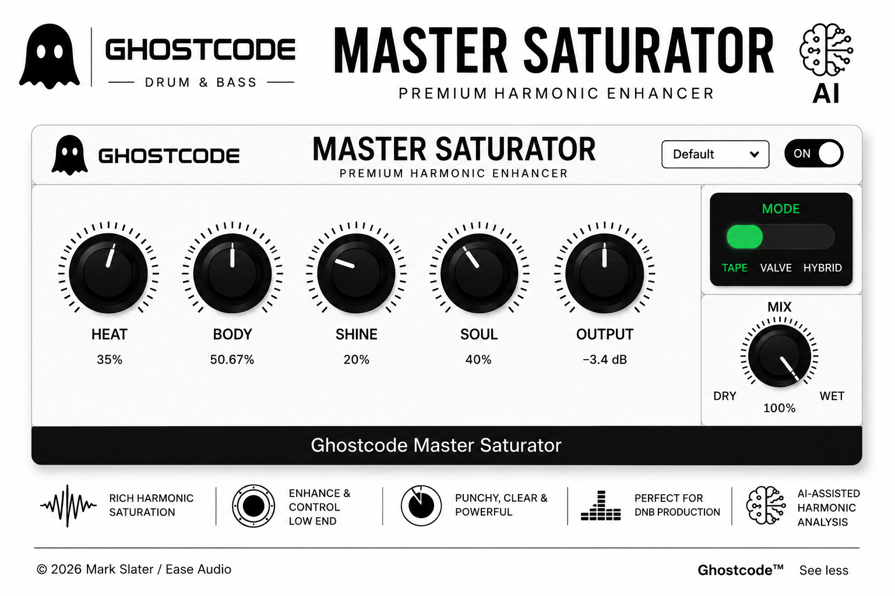

Free Download • Full Version
Master Saturator
A premium harmonic enhancer built for bass, DnB, electronic music and sound design. This front-page demo transitions sub, Reese, Dread, 808 LFO and airy bass sources through a Ghostcode-style master chain.
Copy Share Link copies this front page URL.

64-bitdouble precision processing
4xr8brain oversampling
8 voiceSIMD unison engine
Offlinelocal Ghostcode Brain
What It Does
Saturation for serious low-end work.
Subtle air, hard grit, harmonic lift and weight. Built for producers who need bass to hit without falling apart.
Heat
Drive and density with clean gain staging.
Body
Low-end authority designed for bass music.
Shine
Presence and harmonic lift without brittle fizz.
Soul
Tape, valve and hybrid character modes.
Mix
Parallel wet/dry blend for precise control.
Output
Final trim for clean level matching.
Ghostcode Brain
The plugin learns your sound.
After five sessions it generates Your Sound: a personal preset shaped from your own habits and preferences. All local. All offline. Your data never leaves you.